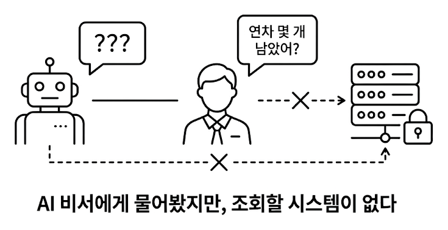
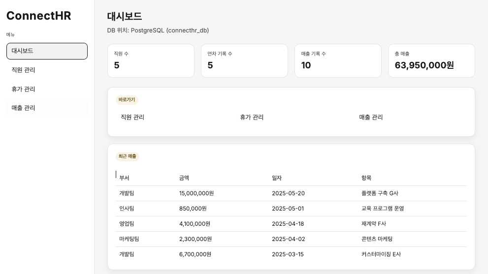

챕터 2. 일단 사내 시스템부터. 직원, 연차, 매출
이번 챕터가 끝나면
- AI 비서가 조회할 사내 시스템(FastAPI + PostgreSQL)이 실제로 돌아가는 걸 눈으로 확인합니다
- REST API와 CRUD 네 동작(등록, 조회, 수정, 삭제)의 감을 잡습니다
- 앞으로 만들 AI 비서의 정식 이름 커넥트HR 에이전트를 갖게 됩니다
준비하기. 실습 시작 전 한 번만 설정
1. 실습 폴더 이동
챕터 1에서 클론한 레포의 ex02 폴더로 이동합니다.
파일 구조는 다음과 같습니다.
이번 챕터의 모든 파일은 [참고]입니다. 직접 작성하지 않고 실행해서 동작만 확인합니다. AI 비서가 조회할 "사내 시스템"이 어떻게 생겼는지 감을 잡는 것이 목적입니다. FastAPI, PostgreSQL 내부 구현에 집착할 필요가 없습니다.
2. 실습 환경 구축
Docker로 PostgreSQL을 띄우고, Python 가상환경에 의존성을 설치합니다.
docker compose up -d를 실행하면 PostgreSQL 컨테이너가 시작되면서 data/schema.sql이 자동으로 실행됩니다. 직원 5명, 연차 기록, 매출 데이터가 미리 입력되어 있어 서버를 띄우자마자 바로 조회할 수 있습니다.
Apple Silicon(M1/M2/M3)에서 psycopg2 설치 실패 시
brew install libpq 를 먼저 실행한 뒤 pip install -r requirements.txt 를 다시 시도하세요. libpq는 PostgreSQL 클라이언트 라이브러리로, psycopg2가 내부에서 사용합니다.
3. 사용할 라이브러리
| 패키지 | 역할 |
|---|---|
fastapi |
웹 API 서버 프레임워크 |
uvicorn |
ASGI 서버 (FastAPI 구동) |
psycopg2-binary |
PostgreSQL 드라이버 |
pydantic |
요청/응답 데이터 검증 |
jinja2 |
관리자 웹 UI HTML 템플릿 |
python-dotenv |
환경 변수 관리 |
4. 실습 순서
이번 챕터는 실행만 해봅니다. 코드는 읽지 않아도 됩니다.
python run.py. 서버 시작- 브라우저
http://localhost:8000/docs. Swagger UI로 API 목록 훑어보기 - 브라우저
http://localhost:8000/admin/. 관리자 웹 UI 확인
2.1 AI가 대답 못 하는 질문: 정형 데이터의 필요

월요일 아침 9시 반. 창밖에 비가 줄을 긋듯 내렸습니다.
어제 RAG 맛을 봤다는 흥분이 아직 가시지 않았는데, 팀장이 커피잔을 들고 자리로 다가왔습니다. 잔에서 김이 올라왔고, 키보드 위에 얹힌 손끝이 미지근했습니다.
손이 멈췄습니다.
잠깐. 규정집 어딘가에 있을 법한데.
책장에서 인사규정 v2.3을 꺼냈습니다. 페이지를 넘겼습니다. "연차는 입사 1년차에 15일…" 규정은 나옵니다. 그런데 "김대리가 지금 며칠 남았는지" 는 어디에도 없었습니다. 당연한 이야기였습니다. 규정집은 "어떻게 발생하는가"를 적는 곳이지, "누가 얼마 남았는가"를 적는 곳이 아닙니다.
아, 이건 문서 문제가 아니구나.
매출도 마찬가지입니다. 작년 매출 보고서 PDF는 있지만 "이번 달"은 DB에만 있죠. 실시간 숫자는 문서에 없었습니다. 규정집을 덮고 의자에 기댔습니다. 천장 형광등이 한 번 깜빡였습니다.
AI 비서가 진짜 업무를 도우려면 사내 데이터를 꺼낼 수 있는 시스템이 먼저 있어야 했습니다. AI에게 "연차 잔여일 알려줘"라고 시킬 대상. 지금까지 그게 없었던 것입니다.
그래서 이번 챕터는 AI 비서보다 사내 시스템을 먼저 실행해 봅니다. 코드를 한 줄씩 뜯지는 않습니다. 완성된 시스템을 띄워 "이런 데이터가 이런 모양으로 들어온다"를 눈으로 확인하는 것이 목적입니다.
2.2 직원, 연차, 매출 세 테이블
화이트보드 앞에 나란히 섰습니다. 팀장이 마커를 집어 들더니 왼쪽부터 박스 세 개를 그려 나갑니다. 마커 냄새가 한 번 훅 올라왔습니다.
직원(Employee). 사번, 이름, 부서, 직급, 입사일. 예: EMP001 김민준 개발팀 과장 2019-03-02.
연차(LeaveBalance). 누가, 몇 년도에, 총 며칠이고, 사용한 게 며칠인지. 예: 이서연(EMP002) 2025년 총 15일, 사용 3일, 잔여 12일.
매출(Sale). 어느 부서가, 언제, 얼마를, 뭘 팔았는지. 예: 개발팀 2025-02-10 12,000,000원 솔루션 개발 C사.
팀장이 직원과 연차 박스 사이에 화살표를 그었습니다.
매출은 혼자 떨어뜨려 그렸습니다. 부서 단위라 직원과 직접 연결되지 않는다는 뜻이었습니다.

세 테이블 모두에 CRUD(등록, 조회, 수정, 삭제) API를 제공하는 것이 이번 챕터에서 띄울 시스템입니다. 챕터 6에서 커넥트HR 에이전트가 이 API를 직접 호출하게 되니, 지금은 "AI가 나중에 쓸 시스템을 먼저 열어두는" 단계입니다.
2.3 이름이 없으면 부를 수 없다: 커넥트HR 에이전트의 탄생
테이블 구조를 정리한 화이트보드를 들여다보던 팀장이 한마디 던졌습니다.
이름이요? 그냥 'AI 비서'라고 부르고 있었는데….
커넥트의 HR 에이전트. 짧고, 무엇을 하는지 바로 전달됩니다.
이름이 붙으니 프로젝트가 진짜 시작된 느낌입니다. 지금은 사내 시스템 껍데기뿐이지만, 앞으로 챕터를 거듭하며 이 에이전트가 한 단계씩 자랍니다. 문서를 읽고, 질문에 답하고, DB를 조회하고, 결국 "진짜 비서"에 가까워지는 여정입니다.
이제 실제로 실행해 볼 차례입니다.
2.4 서버를 띄우고 Swagger UI에서 두드려보기
python run.py로 서버를 띄웁니다.
터미널에 Uvicorn running on http://0.0.0.0:8000이 찍히면 준비 완료입니다. 브라우저에서 http://localhost:8000/docs를 엽니다.

Swagger UI란? FastAPI가 Pydantic 스키마에서 API 문서를 자동으로 뽑아 주는 웹 UI입니다. 각 엔드포인트를 브라우저에서 바로 호출할 수 있어, 별도의 테스트 도구 없이 개발 중 API 동작을 확인할 수 있습니다.
이 책에서는 Swagger UI로 하나하나 호출해 보는 실습은 따로 하지 않습니다. "이 시스템엔 이런 API가 있구나" 정도만 눈으로 확인하고 넘어가세요. 챕터 6에서는 사람 대신 커넥트HR 에이전트가 이 API들을 두드리게 됩니다.
2.5 관리자 웹 UI로도 확인하기
Swagger UI는 개발자용입니다. 같은 시스템에 일반 사용자용 관리자 화면도 함께 제공됩니다. 브라우저에서 http://localhost:8000/admin/을 엽니다.

좌측 직원 관리 메뉴에서 이름 "홍길동"과 부서, 직급, 입사일을 입력하고 저장을 누르면 아래 목록에 한 줄이 바로 추가됩니다. 사번은 시스템이 자동으로 부여합니다.

지금까지 만든 부분이 전체 시스템에서 어디에 놓이는지 한번 보겠습니다. 아래는 이 책 전체에서 만들 커넥트HR 에이전트의 구성도입니다. 진하게 표시된 두 박스가 이번 챕터에서 실행한 부분입니다. 나머지는 다음 챕터들에서 하나씩 채워 갑니다.
종료합니다
Ctrl + C로 서버를 종료하고 docker compose down으로 컨테이너를 내립니다.
2.6 API 엔드포인트 목록
이 시스템이 제공하는 API 전체 목록입니다. 챕터 6에서 커넥트HR 에이전트가 MCP 도구로 이 중 몇 개를 호출하게 됩니다.
| 메서드 | 경로 | 설명 |
|---|---|---|
| GET | /api/employees |
직원 목록 조회 (이름·부서 필터) |
| POST | /api/employees |
직원 등록 |
| GET | /api/employees/{emp_no} |
직원 상세 조회 |
| PATCH | /api/employees/{emp_no} |
직원 정보 수정 |
| DELETE | /api/employees/{emp_no} |
직원 삭제 |
| GET | /api/leaves |
연차 목록 조회 (직원·연도 필터) |
| POST | /api/leaves |
연차 등록 |
| POST | /api/leaves/usage |
연차 사용 등록 |
| PATCH | /api/leaves/{emp_no}/{year} |
연차 수정 |
| GET | /api/sales |
매출 목록 조회 (부서·기간 필터) |
| POST | /api/sales |
매출 등록 |
| GET | /api/sales/dept-summary |
부서별 매출 합계 |
/api/sales/dept-summary는 부서별 매출 합계를 반환하는 특수 엔드포인트입니다. 챕터 6에서 에이전트의 sales_sum 도구가 이 엔드포인트를 호출해 "개발팀 매출 얼마야?" 같은 질문에 답하게 됩니다.
Swagger UI를 마저 훑어보고 있는데 팀장이 모니터를 흘끗 보더니 한마디 던졌습니다.
오프닝에 "문서 검색만 되면 안 되지"라며 판을 뒤집었던 그 사람입니다. 이제 그 판에 올려둘 시스템이 준비됐습니다.
용어 정리
| 본문 속 표현 | 진짜 용어 | 정식 정의 |
|---|---|---|
| "사내 데이터를 꺼내는 시스템" | REST API | HTTP 메서드(GET/POST/PATCH/DELETE)로 자원을 조회·생성·수정·삭제하는 인터페이스 |
| "등록·조회·수정·삭제 네 동작" | CRUD | Create·Read·Update·Delete. 데이터 조작의 기본 네 가지 |
| "직원·연차·매출이 들어 있는 저장소" | PostgreSQL | 오픈소스 관계형 데이터베이스. 테이블 구조로 저장하고 SQL로 조회 |
| "요청·응답 JSON의 모양을 정한 양식" | Pydantic | Python에서 요청·응답 데이터의 구조와 검증 규칙을 선언하는 라이브러리 |
| "버튼 한 번으로 API를 테스트하는 웹 화면" | Swagger UI | FastAPI가 Pydantic 스키마에서 자동 생성하는 API 문서·테스트 UI |
| "API는 그대로, 호출자만 바뀐다" | MCP Tools | 챕터 6에서 붙일 "AI가 API를 직접 호출"할 수 있게 해 주는 도구 계층 |
이것만은 기억하자
- 문서로는 답할 수 없는 질문이 있습니다. "김대리 연차 며칠?" 같은 실시간 정형 데이터는 규정집이 아니라 DB에서 꺼내야 합니다. RAG만으로는 이 영역을 덮을 수 없습니다.
- API는 그대로, 호출자만 바뀝니다. 오늘 만든 FastAPI는 지금은 사람이 웹 UI로 호출하지만, 챕터 6부터는 커넥트HR 에이전트가 같은 엔드포인트를 대신 호출합니다.
- 커넥트HR 에이전트의 이름이 정해졌습니다. 다음 챕터부터는 이 에이전트에게 먹일 사내 문서를 어떤 형식으로 수집하고 정리할지 설계합니다.